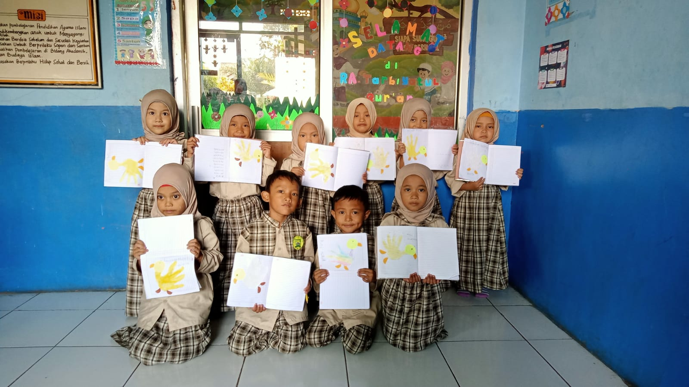
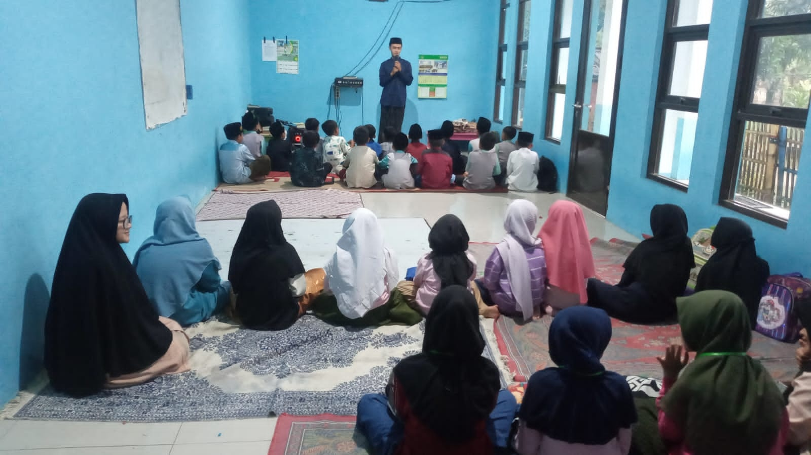
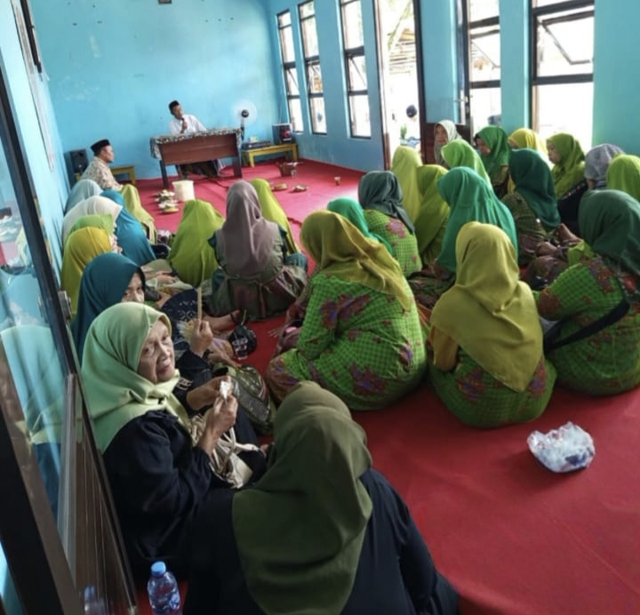

Program terstruktur, kurikulum integratif berakar Al-Qur'an, dan profil asatidz pembimbing di setiap jenjang.

Raudhatul Athfal Mutiara Ilmu memadukan kurikulum standar Kementerian Agama dengan pendekatan sentra berbasis nilai islami. Mengembangkan kecerdasan spiritual, motorik, bahasa, dan sosial anak dalam suasana yang hangat dan menyenangkan.

DTA Mutiara Ilmu menjadi suplemen pendidikan agama esensial bagi anak-anak usia Sekolah Dasar. Dilaksanakan pada sore hari, program ini memperdalam kajian aqidah, akhlak, fiqih ibadah, sejarah kebudayaan Islam, dan bahasa Arab dasar.

Wadah pembinaan ruhiyah dan keilmuan masyarakat luas. Menghadirkan kajian bertema fiqih keluarga, tafsir Al-Qur'an tematik, tazkiyatun nafs, serta aksi sosial peduli dhuafa dan yatim piatu.
Para pendidik berakhlak mulia, kompeten di bidangnya, dan penuh kesabaran dalam membimbing santri putra dan putri di setiap unit.

Pengampu Tahsin & Tahfidz Al-Qur'an
Alumni Pendidikan Agama Islam UIN SGD Bandung. Hafizh 30 Juz bersanad, berpengalaman 8 tahun membimbing munaqosyah tahfidz.

Sentra Adab & Kreativitas Cilik
Sarjana Pendidikan Anak Usia Dini (PAUD) UPI. Tersertifikasi pendidik prasekolah islam berkarakter dan penggiat dongeng sirah nabawiyah.

Pengampu Fiqih Ibadah & Bahasa Arab
Alumni Fakultas Syariah Universitas Al-Azhar Kairo. Aktif mengajar fiqih dasar anak dan kajian fiqih keluarga di majelis taklim.

Sentra Calistung & Hafalan Doa
Sarjana Agama Islam spesialisasi bimbingan anak usia dini. Mengembangkan metode belajar tilawati balita yang interaktif.

Pengampu Tarikh Islam & Kaligrafi
Pembina ekstrakurikuler seni kaligrafi islami santri dan pengajar sejarah kebudayaan Islam dengan metode visual bercerita.

Pengasuh Kajian Tafsir & Fiqih Wanita
Da'iyah dan pemerhati keluarga sakinah. Membimbing pembacaan Al-Qur'an tartil bagi ibu-ibu jamaah majelis taklim.